用户端UI优化prd
本文档基于《客户端ui设计.html》整理，将页面中的每一个示例作为一个独立优化点输出。每个优化点包含来源示例、优化对象、优化目标、需求说明、交互说明与验收标准。
1. 背景与目标
用户端 UI 优化不是单一页面改样式，而是对用户中心多个业务示例进行统一改版。每个示例都代表一个明确的优化场景，需要分别沉淀为产品需求，便于设计、前端和测试逐项落地。
所有章节和新增内容需与原有页面保持版心一致，版心范围为 1200px-1700px；页面宽度小于 1350px 时，表格出现左右滚动条，不压缩表格。注意：只对页面按钮、页面文字、鼠标悬浮、鼠标选中、点击弹框、抽屉进行统一，不改变业务逻辑。
产品目标
- 把设计页面中的每个示例拆成独立优化点。
- 每个优化点明确页面范围、优化目标和验收标准。
- 统一用户端列表、卡片、图片、字段、操作、详情跳转与多语言规则。
- 避免只输出通用规范，确保每个示例都能进入排期和开发验收。
体验目标
- 用户在不同业务页面看到一致的表格、按钮、状态和图片交互。
- 长文本、长编号、多语言文案不造成页面变形。
- 主操作、次操作、轻操作和详情入口层级清晰。
- 首页入口、列表状态、详情页之间跳转关系一致。
2. 优化点总览
| 优化点 | 来源示例 | 优化对象 | 优先级 |
|---|---|---|---|
| 01 | 菜单栏示例页面 | 用户中心左侧菜单、一级菜单、二级菜单、菜单图标、选中态、展开/收起和多语言菜单展示。 | 最高 |
| 02 | WhatsApp咨询悬浮入口示例 | 右侧独立圆形 WhatsApp 咨询吸附入口、二维码咨询卡片、电话入口和悬浮交互。 | 最高 |
| 03 | 商品详情页选中效果示例 | 商品详情页颜色、尺码、SKU 数量选择和底部汇总。 | 高 |
| 04 | 个人中心首页示例 | 个人中心概览、重要待办、报价单、我的订单、国际配送、推荐与收藏模块。 | 最高 |
| 05 | 报价单页面示例 | 报价单筛选、状态 Tabs、批量支付、20 条报价单列表、报价单类型、待付款胶囊、付款截止时间、费用数据、支付交易和收银台弹窗。 | 最高 |
| 06 | 报价单详情示例 | 报价单基础信息、支付状态、费用一览、商品明细、编号管理、价格、备注、附加项双入口和附加项明细弹框。 | 最高 |
| 07 | 我的订单页面示例 | 我的订单列表、订单信息、商品数据、质检数据、仓库数据、交易和操作列。 | 最高 |
| 08 | 订单详情页面示例 | 订单基础状态、订单编号、支付信息、数量一览、商品明细、编号管理、规格、价格、商品数据、质检数据、仓库数据、备注和附加项。 | 最高 |
| 09 | 我的商品页面示例 | 我的商品筛选、状态 Tabs、商品图、商品列、编号管理、规格、价格、商品数据、质检数据、仓库数据、备注和附加项。 | 最高 |
| 10 | 问题确认页面示例 | 重要待办问题确认列表、商品图、商品列、编号管理、规格、价格、商品数据、质检数据、问题数据和处理入口。 | 最高 |
| 11 | 测量报告页面示例 | 测量/报告列表、商品列合并、报告类型、批量下载和详情入口。 | 最高 |
| 12 | 系统通知页面示例 | 系统通知列表、通知类型、通知内容、通知时间、详情入口。 | 最高 |
| 13 | 我的仓库页面示例 | 我的仓库筛选、托管入口、商品库存列表、小包裹父行、展开子表、父级全选子级、底部提交发货单和批量选择。 | 最高 |
| 14 | 确认发货页面示例 | 提交发货单地址确认、关税缴纳、国际物流方式、发货附加项、备注、待发货商品列表和新增发货抽屉。 | 最高 |
| 15 | 国际配送页面示例 | 国际配送列表、商品、运输方式、费用信息、配送状态和操作。 | 高 |
| 16 | 国际配送详情页面示例 | 国际配送详情基础信息、箱子数据、发货商品、核对确认、下载单据、复制和图片预览。 | 最高 |
| 17 | 国际配送-待审核详情页面示例 | 国际配送待审核详情、审核中状态、添加商品、发货商品列表、取消配送和移除确认。 | 最高 |
| 18 | 资金管理页面示例 | 账户余额、交易明细、交易编号、订单编号、金额和时间。 | 最高 |
| 19 | 余额汇款示例页面 | 余额汇款入口、银行选择、汇款信息填写、收款信息、复制银行信息和提交审核。 | 最高 |
| 20 | 余额提现示例页面 | 余额提现入口、账户余额、全部提现、提现信息填写、提现密码、提现原因和提交审核。 | 最高 |
| 21 | 提现记录、充值记录页面 | 资金管理模块中的提现记录、充值记录列表、状态、金额、时间、详情和筛选。 | 最高 |
| 22 | 购物车页面示例 | 购物车商品列表、手动下单入口与右侧抽屉、数量、单价、小计、备注、底部汇总和删除确认。 | 最高 |
| 23 | 购物车物流方式选择 | 购物车确认订单流程中的国际运输方式选择弹窗、船运排序、能力标签和报价操作。 | 最高 |
| 24 | 购物车-附加项管理示例页面 | 附加项管理、番号管理、贴纸制作、洗标制作和 FBA 制作等购物车附加服务配置。 | 最高 |
| 25 | 收藏商品页面示例 | 收藏商品列表、商品筛选、商品图、收藏日期和取消收藏。 | 中 |
| 26 | 收藏店铺页面 | 收藏店铺列表、店铺信息、收藏时间、取消收藏、进入店铺和批量管理。 | 中 |
| 27 | 账户设置页面示例 | 账户基础信息、企业信息、国家地区、语言、币种、时区与资料卡。 | 高 |
| 28 | 账号安全、我的地址 | 账号安全信息、登录密码、支付密码、绑定信息、地址列表、新增编辑地址和默认地址管理。 | 高 |
| 29 | 英文版优化内容 | 菜单栏、列表字段、购物车附加项等英文文案统一优化。 | 最高 |
3. 优化点01：菜单栏示例
优化目标
- 统一用户中心左侧菜单栏的文字展示、图标风格、选中状态和展开/收起交互。
- 解决菜单名称因列宽不足显示省略号的问题，确保一级菜单、二级菜单均可完整阅读。
- 在中文、英文、日文、韩文、繁体中文环境下，菜单栏不因文案长度造成布局错位。
优化要求
- 菜单栏宽度需满足现有菜单名称完整展示，禁止出现
B2B代行...等省略号截断。 - 菜单图标沿用原系统线性图标，不新增、不替换为不同风格图标；图标尺寸、线宽和颜色保持一致。
- 一级菜单与二级菜单之间保持清晰层级，展开箭头、缩进、选中背景和文字权重需统一。
- 当前页面所属一级菜单和二级菜单需要同时呈现选中态，避免用户无法判断所在位置。
交互规则
| 交互项 | 规则 |
|---|---|
| 展开/收起 | 有子菜单的菜单项点击后切换展开和收起状态，箭头方向同步变化。 |
| 选中态 | 点击一级菜单或二级菜单后，对应菜单项显示统一浅灰蓝背景和深蓝文字。 |
| 文字展示 | 菜单文字允许自然换行完整展示，不得使用省略号；换行后不遮挡图标和箭头。 |
| 多语言 | 英文菜单如 B2B Control、Optional Services 需完整展示，不挤压图标、不超出菜单栏。 |
验收标准
- 打开菜单栏示例页面，左侧菜单中的“B2B代行管理”“发货配送”“推荐商品”“账户设置”等均完整显示。
- 菜单栏中不出现省略号截断，不出现文字遮挡、图标错位或箭头丢失。
- 展开和收起菜单时，二级菜单展示稳定，页面主体内容不抖动。
- 菜单图标与现有系统风格一致，不出现不同线宽、不同视觉语言的图标混用。
- 切换到英文菜单时，菜单文字仍完整展示，长文案可换行且不影响可读性。
4. 优化点02：WhatsApp咨询悬浮入口
入口结构
- 页面右侧保留独立圆形 WhatsApp 咨询吸附入口，位于展开菜单和返回顶部入口上方，并与侧边入口紧凑排列。
- 默认状态使用白色圆形底、深蓝色耳机图标和轻阴影样式，尺寸与菜单、返回顶部按钮保持一致。
- 鼠标滑过或键盘聚焦 WhatsApp 图标时，图标切换为红色选中态，并在按钮左侧展开咨询卡片。
- 咨询卡片包含「售前咨询」标题、官方 WhatsApp 二维码、提示文案和电话入口，右侧箭头指向 WhatsApp 图标。
交互规则
- 鼠标移出 WhatsApp 图标后收起二维码咨询卡片；键盘失焦后同样收起。
- 展开时需要设置
aria-expanded="true"，收起时恢复为false。 - 二维码卡片贴近 WhatsApp 图标左侧展示，不得遮挡主内容关键操作，不得与返回顶部、展开菜单等侧边入口重叠。
- 电话入口使用可点击链接，移动端可唤起拨号能力，桌面端保持可复制和可识别。
验收标准
- 打开示例页时，右侧默认展示独立圆形 WhatsApp 图标，未 hover 时不展示二维码卡片。
- 鼠标 hover 或键盘 focus 后，WhatsApp 图标变为红色选中态并显示二维码咨询卡片。
- 鼠标移出或失焦后卡片自动收起，页面不会出现残留遮挡。
- WhatsApp、展开菜单、返回顶部三个圆形按钮上下排列紧凑，视觉间距保持一致。
- 二维码、提示文案和电话入口清晰可读，1366px 桌面宽度下不超出视口。
- 该悬浮入口在首页、列表页、详情页等用户端页面表现一致。
5. 优化点03：商品详情页选中效果
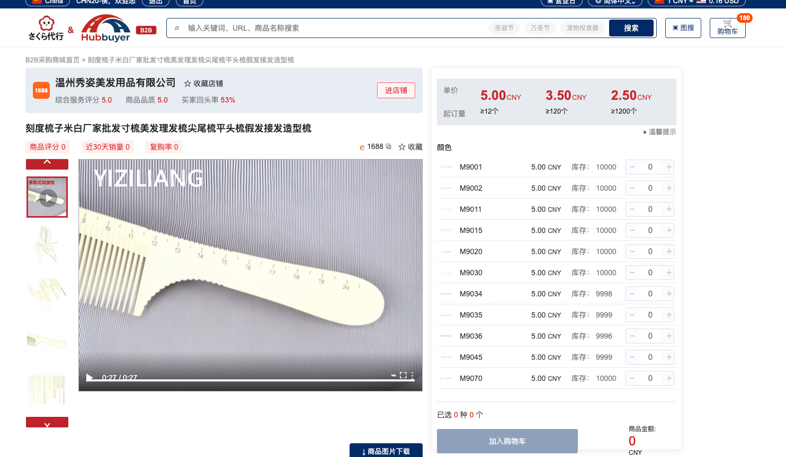
参考页面：商品详情页选中效果示例-2.html
优化目标
- 让用户清楚识别当前已选择的颜色、尺码和 SKU 数量。
- 选中态不能过度抢眼，避免干扰商品主信息。
- 数量变化后，底部金额和已选件数实时联动。
优化要求
- 颜色选中使用柔和描边、浅红底和右下角小标识。
- 未选中项保持白底灰线，不使用大面积填充。
- 有购买数量的 SKU 行整行轻量高亮。
- 底部固定展示已选种类、总件数、商品金额和“加入购物车”。
验收标准
| 选中态 | 颜色、尺码、SKU 数量选中后均有明确视觉反馈。 |
| 汇总联动 | 用户增减数量后，底部总件数和商品金额实时更新。 |
| 布局稳定 | 长规格、多个 SKU、不同图片尺寸不挤压底部主操作。 |
6. 优化点04：个人中心首页
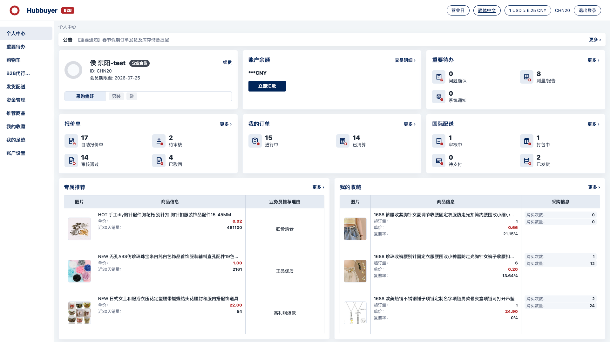
参考页面：个人中心首页示例.html
优化范围
| 模块 | 点击对象 | 目标页面 | 要求 |
|---|---|---|---|
| 报价单 | 更多 | 报价单页面 | 进入完整报价单列表。 |
| 报价单 | 自助报价 | 报价单自助报价分类列表 | 用于发起新的自助报价流程，不与状态筛选混用。 |
| 报价单 | 待审核 / 已通过 / 已驳回 | 报价单页面对应状态列表 | 进入列表后自动带上对应状态筛选。 |
| 我的订单 | 更多 | 我的订单页面 | 进入完整订单列表。 |
| 我的订单 | 进行中 / 已清算 | 我的订单页面对应状态列表 | 状态卡整体可点击。 |
| 重要待办 | 更多 | 问题确认列表页 | 进入重要待办完整列表，默认聚焦问题确认相关待办。 |
| 重要待办 | 问题确认 | 问题确认页面 | 点击进入问题确认页面，数量表示未读信息数量。 |
| 重要待办 | 测量报告 | 测量报告页面 | 点击进入测量报告页面，数量表示未读信息数量。 |
| 重要待办 | 系统通知 | 系统通知页面 | 点击进入系统通知页面，数量表示未读信息数量。 |
| 国际配送 | 更多 / 状态卡 | 国际配送页面 | 状态语义和目标列表 Tabs 保持一致。 |
验收标准
- 首页概览模块固定为两行三列，同宽同高。
- “更多”统一代表完整列表；状态卡统一代表对应状态筛选。
- 重要待办使用图标 + 数量 + 名称展示，数量统一表示未读信息数量。
- 推荐商品和收藏商品图片支持悬停放大。
7. 优化点05：报价单页面
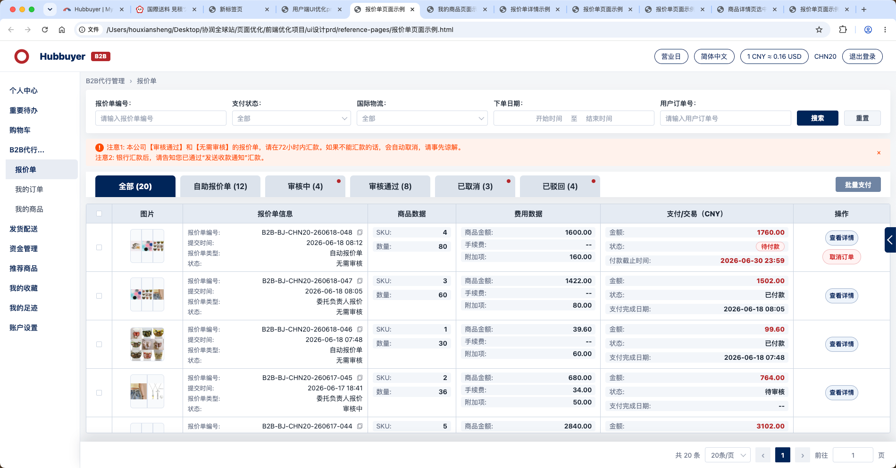
来源示例：报价单页面示例.html
页面目标
- 让用户在报价单列表中快速判断报价类型、审核状态、支付状态、费用构成和付款截止时间。
- 支持用户按报价单编号、支付状态、国际物流、下单日期、用户订单号进行筛选，筛选区保持单行高密度布局。
- 支持对待付款报价单进行批量支付或从单条报价单进入收银台，同时保留单条报价单详情入口。
数据范围
- 列表默认展示 20 条报价单数据，底部分页显示
共 20 条、20条/页。 - 状态 Tabs 展示
全部(20)、自助报价单(12)、审核中(4)、审核通过(8)、已取消(3)、已驳回(4)。 - 报价单类型仅允许展示
自动报价单、委托负责人报价两类，由数据自动生成，列表中任选其一展示。
列表字段与展示规则
| 模块 | 需求说明 |
|---|---|
| 筛选区 | 筛选项按一行密集排布，包含报价单编号、支付状态、国际物流、下单日期、用户订单号；搜索使用深蓝主按钮，重置使用浅灰描边次按钮。 |
| 提醒条 | 筛选区下方展示汇款提醒，内容强调【审核通过】和【无需审核】报价单需在 72 小时内汇款，否则自动取消；右侧提供关闭入口。 |
| 状态 Tabs | 当前选中 Tab 使用深蓝底白字；有待处理提示的状态使用红点标识；批量支付按钮固定在 Tabs 区右侧。 |
| 表格列 | 列顺序固定为：勾选框、图片、报价单信息、商品数据、费用数据、支付/交易（CNY）、操作；表头浅蓝灰底，所有列分隔线清晰。 |
| 图片列 | 图片列整体视觉尺寸保持 72x72；1 个 SKU 显示单张 72x72，2 个 SKU 显示 2 张 36x72，3 个及以上 SKU 最多显示 3 张 24x72；图片使用 contain 展示，悬停或聚焦展示 180x180 放大预览。 |
| 报价单信息 | 依次展示报价单编号、提交时间、报价单类型、状态；报价单编号文字和复制图标均可点击复制完整编号，编号不得被截断。 |
| 商品数据 | 只展示 SKU 和数量；不展示类型字段；数值右侧对齐，标签使用浅灰底条增强扫描效率。 |
| 费用数据 | 展示商品金额、手续费、附加项；数值为 0.00 时显示为 --，避免无意义金额干扰阅读。 |
| 支付/交易（CNY） | 展示金额、状态、付款截止时间或支付完成日期；金额使用红色强调。待付款状态使用红色胶囊展示，付款截止时间字体为红色。 |
| 操作列 | 每行提供“查看详情”浅蓝描边按钮，按钮居中、不换行，点击进入报价单详情页。 |
支付与收银台规则
| 场景 | 需求说明 |
|---|---|
| 单条待付款 | 点击支付/交易列中的 待付款 红色胶囊，打开 Hubbuyer 收银台弹窗；交互与批量支付弹窗保持一致。 |
| 付款截止时间 | 待付款报价单显示 付款截止时间，示例为 2026-06-30 23:59，时间值必须红色加粗；已付款报价单显示 支付完成日期。 |
| 批量支付 | 点击批量支付时校验已勾选报价单是否允许支付；未选择时给出轻提示；选择可支付报价单后打开 Hubbuyer 收银台弹窗。 |
| 收银台弹窗 | 弹窗标题为 Hubbuyer收银台；顶部展示应付金额和支付截止提示；待支付报价单表格列内容居中，报价单编号完整展示不得截断。 |
| 支付方式 | 支付方式包含账户余额和万里汇。账户余额默认选中并使用红色描边；万里汇区域严格按参考图展示品牌、卡组织、支持付款币种 USD、付款处理时间一个工作日内、服务费率 2.9%。 |
| 弹窗操作 | 底部右侧固定展示“取消”和“立即支付”按钮；取消关闭弹窗，立即支付保留支付提交入口。 |
交互规则
- 搜索按钮按当前筛选条件刷新列表；重置按钮清空所有筛选项并回到全部 Tab。
- 点击状态 Tab 后刷新列表数据和数量统计，当前 Tab 保持高亮。
- 勾选框用于批量支付选择；表头勾选框支持全选当前页可支付报价单。
- 点击报价单编号文字或复制图标时复制完整报价单编号，并在当前行附近给出复制成功反馈。
- 点击待付款胶囊或批量支付按钮打开收银台弹窗；弹窗关闭后保持当前列表筛选、Tab 和勾选状态。
- 点击查看详情进入报价单详情页，详情页需能返回当前列表筛选状态。
验收标准
| 截图一致 | PRD 截图与 reference-pages/报价单页面示例.html 当前列表页一致，包含筛选区、提醒条、Tabs、批量支付、20 条分页和待付款首行。 |
| 数据条数 | 默认列表共 20 条数据，图片数量、表格行数和分页数量一致。 |
| 列顺序 | 表格列顺序必须为：勾选框、图片、报价单信息、商品数据、费用数据、支付/交易（CNY）、操作。 |
| 报价类型 | 报价单信息中必须展示报价单类型，且只出现 自动报价单 或 委托负责人报价。 |
| 编号完整 | 报价单编号在列表和收银台弹窗中均完整可读，不允许截断或省略号显示。 |
| 付款状态 | 待付款状态为红色胶囊，点击可打开收银台；付款截止时间红色展示；已付款行展示支付完成日期。 |
| 图片规则 | 图片列按 SKU 数量展示：1 个 SKU 为单张 72x72，2 个 SKU 为 2 张 36x72，3 个及以上 SKU 最多 3 张 24x72；多 SKU 图片整体视觉尺寸与单图一致，不使用 +N。 |
| 金额强调 | 支付/交易（CNY）列中的金额值使用红色加粗展示。 |
| 收银台 | 收银台表格列内容居中；万里汇支付方式严格按参考图展示，不使用自定义发挥版样式。 |
| 布局稳定 | 1366px 桌面宽度下无页面级横向滚动，操作列按钮完整显示，底部分页不遮挡表格内容。 |
8. 优化点06：报价单详情页面
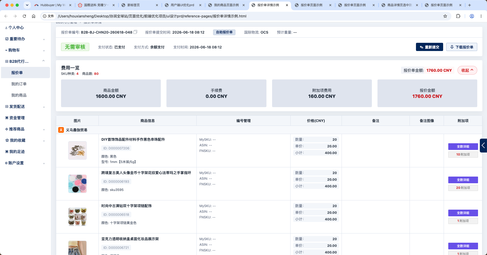
来源示例：报价单详情示例.html
页面目标
- 让用户进入详情页后快速确认报价单编号、提交时间、报价类型、国际物流、支付状态和支付方式。
- 集中展示报价单费用构成，包含商品金额、手续费、附加项费用和报价金额。
- 将商品明细、编号管理、价格、备注、备注图像和附加项放入统一表格，附加项支持按商品查看全数详细和数量明细。
数据范围
- 详情页展示 1 张报价单的完整信息，示例报价单编号为
B2B-BJ-CHN20-260618-048。 - 费用一览展示 SKU 种类、商品数、商品金额、手续费、附加项费用和报价金额。
- 商品明细示例展示 4 个商品行，商品图统一为 72x72；附加项示例包含首行 10 个、第二行 20 个、其余行 1 个。
页面结构与展示规则
| 模块 | 需求说明 |
|---|---|
| 顶部摘要 | 展示报价单编号、提交时间、报价类型、国际物流、预估重量；报价单编号文字和复制图标均可点击复制完整编号。 |
| 支付信息 | 展示审核状态、支付状态、支付方式、支付时间；状态使用统一状态色，已支付和无需审核要清晰可辨。 |
| 操作区 | 提供“重新提交”主按钮和“下载报价单”次按钮；按钮位于支付信息行右侧，文字完整不换行。 |
| 费用一览 | 展示 SKU 种类、商品数、商品金额、手续费、附加项费用、报价金额；报价金额使用红色强调；右侧“收起/展开”按钮可折叠或恢复费用卡片，按钮图标方向随状态切换。 |
| 明细表格 | 列顺序为：图片、商品信息、编号管理、价格(CNY)、备注、备注图像、附加项；表格宽度控制在内容区内。 |
| 图片列 | 商品图固定 72x72，使用 contain 展示，悬停或聚焦显示放大预览。 |
| 商品列 | 订单编号放在第一行且字号与商品名称一致；展示商品名称、ID、颜色和型号；商品名称默认按列宽展示，鼠标悬停、鼠标选中或键盘聚焦商品名称时弹框显示完整商品名称；订单编号文字和复制图标均可点击复制完整订单编号。 |
| 编号管理 | 展示 MySKU、ASIN、FNSKU；与商品名称、价格列“数量”首行对齐。 |
| 价格(CNY) | 展示数量、单价、小计；字段使用浅蓝灰底承载，标签和值保持单行。 |
| 附加项 | 附加项列使用上下双入口：上方紫色“全数详细”按钮，下方灰色“数量 附加项”按钮；示例首行展示 10附加项，第二行展示 20附加项，其余行展示 1附加项；两按钮宽度一致，在单元格内水平和垂直居中。 |
交互规则
- 点击报价单编号、订单编号文字或旁边复制图标时复制完整编号，并给出复制成功反馈。
- 商品名称超出列宽时保持表格内省略展示，鼠标悬停、鼠标选中或键盘聚焦商品名称时显示完整商品名称弹框，弹框不改变行高和列宽。
- 点击“重新提交”进入报价单重新提交流程，需要保留当前报价单上下文。
- 点击“下载报价单”下载当前报价单文件，按钮样式保持次级操作。
- 点击费用一览右侧“收起”按钮后隐藏费用卡片并切换为“展开”图标；再次点击“展开”恢复费用卡片，可来回切换。
- 点击或悬停商品图片时展示放大预览，图片加载失败时显示占位。
- 点击“全数详细”或“数量 附加项”按钮时，在当前按钮附近展示跟随弹框，不使用整页遮罩；弹框展示检品种类、数量、单价、小计(CNY)和底部合计。
- 附加项明细数量超过 10 条时，弹框明细区域内部滚动；首行点击后显示 10 条，第二行点击后显示 20 条，其他行显示 1 条。
验收标准
| 布局宽度 | 1366px 桌面宽度下页面不出现横向溢出，右侧附加项列完整显示。 |
| 图片规范 | 所有商品图均为 72x72，使用 contain，不裁切商品主体。 |
| 列宽规范 | 商品列不过宽；价格(CNY)列不占用过多空间；备注图像和附加项表头不重叠。 |
| 对齐规范 | 商品名称、MySKU、数量三列首行内容顶部对齐；附加项双按钮在单元格内居中；弹框内“检品种类”、数量、单价、小计列内容居中，小计金额使用红色强调。 |
| 完整信息 | 商品名称鼠标悬停、鼠标选中或键盘聚焦时展示完整商品名称弹框；弹框显示在当前名称附近，不被表格裁切，不遮挡关键操作。 |
| 字段命名 | 商品编号字段统一命名为“ID”，不使用单独的“ID”文案。 |
| 复制反馈 | 报价单编号和订单编号文字、复制图标均可触发复制完整编号；复制后展示“复制成功”轻提示。 |
| 字段字号 | 商品标题、编号、规格、编号管理、价格数据和附加项弹框使用表格规范字号；附加项弹框表头、内容、底部统计不得使用详情页大标题字号。 |
| 金额强调 | 报价单金额和报价金额使用红色强调，其他金额保持常规文本层级。 |
| 费用收起 | 点击“收起”后费用卡片隐藏，按钮变为“展开”并显示向下图标；再次点击后恢复卡片，按钮变回“收起”并显示向上图标。 |
| 附加项弹框 | 附加项弹框跟随点击按钮显示，无全屏遮罩；点击外部、关闭按钮或 Esc 可关闭；超过 10 条明细时弹框内部滚动，不拉高页面、不遮挡右侧操作列。 |
9. 优化点07：我的订单页面
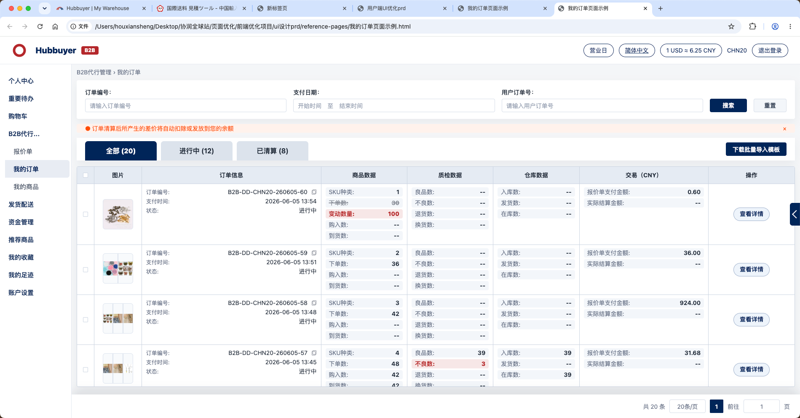
来源示例：我的订单页面示例.html
| 优化对象 | 需求说明 |
|---|---|
| 筛选区 | 订单编号、用户订单号、搜索、重置使用统一控件，高度 32px，按钮样式与全站一致。 |
| 商品图片 | 图片列整体视觉尺寸保持 72x72；1 个 SKU 显示单张 72x72，2 个 SKU 显示 2 张 36x72，3 个及以上 SKU 最多显示 3 张 24x72；图片使用 contain 展示，悬停或聚焦显示 180x180 放大预览，放大预览不得被多 SKU 容器裁切。 |
| 订单信息 | 订单编号优先完整展示；订单编号文字和复制图标均可点击复制完整编号；状态、下单时间、商品标题分层展示；商品标题鼠标悬停、鼠标选中或键盘聚焦时弹框显示完整商品名称。 |
| 业务数据 | 商品数据、质检数据、仓库数据、交易字段只展示有数据项；数据为 0 时展示 --。当下单数量发生变动时，原下单数使用灰色删除线保留，新增“变动数量”字段并使用浅红底、红色文字突出最终数量；质检数据中“不良数”大于 0 时，“不良数:”标签和数量均使用浅红底、红色文字高亮。 |
| 操作列 | “查看详情”使用浅蓝描边圆角入口，内容居中，不换行。 |
验收标准
- 列表在 1366px 宽度下不出现页面级横向滚动。
- 订单编号文字和复制图标均可点击复制完整编号。
- 图片列按 SKU 数量展示：1 个 SKU 为单张 72x72，2 个 SKU 为 2 张 36x72，3 个及以上 SKU 最多 3 张 24x72；多 SKU 图片整体视觉尺寸与单图一致。
- 商品标题超出列宽时默认省略，鼠标悬停、鼠标选中或键盘聚焦时弹框展示完整商品名称，不撑开订单信息列。
- 业务数据仅展示有数据项，数据为 0 时统一展示为
--。 - 存在变动数量时，原下单数必须保留删除线；变动数量整行使用浅红底和红色文字，与参考截图一致。
- 质检数据中“不良数”大于 0 时，标签和数字必须整行浅红底、红色文字高亮；无值或 0 值保持普通灰底与
--。 - “查看详情”跳转订单详情页。
- 已清算、进行中等状态展示与首页状态入口一致。
10. 优化点08：订单详情页面
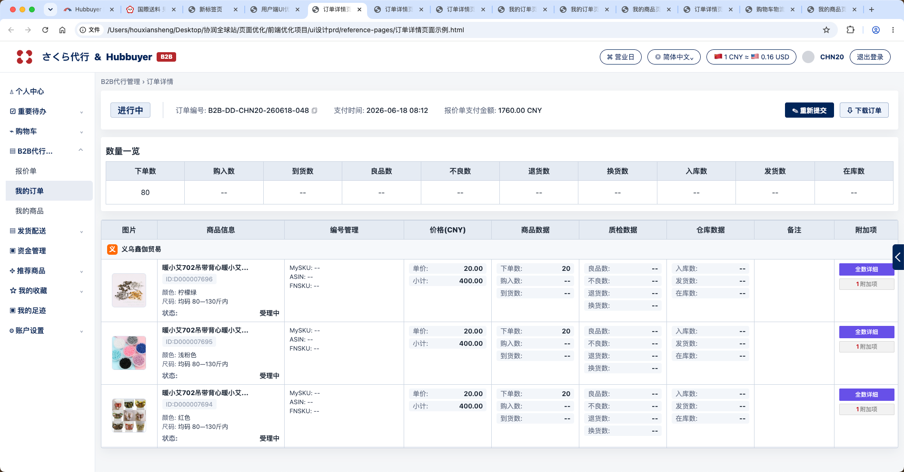
来源示例：订单详情页面示例.html
页面目标
- 让用户在订单详情页集中查看订单状态、订单编号、支付时间、报价单支付金额和明细商品处理进度。
- 通过“数量一览”快速核对下单数、购入数、到货数、良品数、不良数、退货数、换货数、入库数、发货数、在库数等关键履约数据。
- 在商品明细表中保持图片、商品信息、编号管理、价格、商品数据、质检数据、仓库数据、备注和附加项的统一布局，并与订单列表页字段条样式保持一致。
数据范围
- 顶部展示订单状态、订单编号、支付时间、报价单支付金额，并在右侧保留“重新提交”“下载订单”操作。
- 数量一览展示下单数、购入数、到货数、良品数、不良数、退货数、换货数、入库数、发货数、在库数。
- 商品明细示例展示 4 个商品行，商品图统一 72x72，商品数据行统一使用浅灰字段条样式，附加项入口展示“全数详细”和具体附加项数量。
页面结构与展示规则
| 模块 | 需求说明 |
|---|---|
| 顶部订单信息 | 状态标签放在左侧，订单编号、支付时间、报价单支付金额横向展示；订单编号文字和复制图标均可点击复制完整编号。顶部信息区与右侧操作按钮保持同一行，符合截图中的高密度详情页布局。 |
| 页面操作 | 重新提交使用深蓝主按钮，下载订单使用浅蓝描边次按钮；按钮高度、圆角和字号与用户中心详情页一致，按钮组右对齐。 |
| 数量一览 | 使用独立表格展示各类数量；表头包含下单数、购入数、到货数、良品数、不良数、退货数、换货数、入库数、发货数、在库数；数值为 0 时显示为 --，避免无效数字干扰阅读。 |
| 明细表格 | 列顺序为：图片、商品信息、编号管理、价格(CNY)、商品数据、质检数据、仓库数据、备注、附加项；规格信息合并展示在商品信息列中。 |
| 图片列 | 商品图固定 72x72，使用 contain 展示，在图片列内水平和垂直居中；悬停或聚焦显示放大预览。 |
| 商品列 | 展示商品名称、ID、颜色、尺码和状态；不在商品列重复展示订单编号；商品名称超出列宽时省略展示并支持完整名称弹框。 |
| 编号管理 | 单独展示 MySKU、ASIN、FNSKU，与商品名称首行顶部对齐。 |
| 价格(CNY) | 只展示单价和小计；状态不放在价格列，统一归入商品列。 |
| 业务数据 | 商品数据、质检数据、仓库数据采用统一字段条：浅灰背景、左标签右数值、数值右对齐加粗；字段顺序与截图一致，商品数据为下单数、购入数、到货数，质检数据为良品数、不良数、退货数、换货数，仓库数据为入库数、发货数、在库数。 |
| 备注与附加项 | 备注列预留回复或说明空间；附加项列展示“全数详细”主入口和“1 附加项 / 2 附加项”等数量入口，入口在单元格内居中且不撑高表格行。 |
交互规则
- 点击订单编号文字或复制图标均可复制完整订单编号，复制后展示轻提示。
- 商品名称超出列宽时默认省略，鼠标悬停、鼠标选中或键盘聚焦时弹框展示完整商品名称。
- 商品图片悬停或键盘聚焦时显示放大预览，点击可进入图片预览。
- 点击“全数详细”或附加项数量入口展示对应商品附加项明细。
- 点击重新提交进入订单重新提交流程；点击下载订单下载当前订单数据。
验收标准
- 页面在 1366px 桌面宽度下不出现页面级横向滚动，所有表头完整显示。
- 商品图均为 72x72，图片列内容水平和垂直居中。
- 商品名称、MySKU、单价、商品数据等首行内容顶部对齐，表格行高稳定。
- 数量为
0的字段统一显示为--；费用或数量字段格式在项目所有页面中保持一致。 - 数量一览必须完整展示 10 个数量字段，表头与数值居中，整体宽度与内容区对齐。
- 附加项列同时展示“全数详细”和数量入口，按钮不遮挡、不换行、不挤压备注列。
- 商品名称弹框显示完整商品名称，弹框不被表格裁切，不遮挡关键操作。
- 订单编号文字和复制图标均可点击复制完整编号。
11. 优化点09：我的商品页面
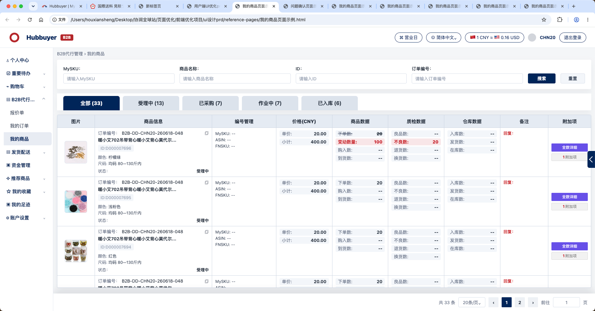
来源示例：我的商品页面示例.html
页面目标
- 让用户通过 MySKU、商品名称、ID、订单编号快速筛选已提交代行商品。
- 按全部、受理中、已采购、作业中、已入库状态查看商品处理进度。
- 在同一表格内集中核对商品信息、编号管理、价格、商品数据、质检数据、仓库数据、备注和附加项。
数据范围
- 列表默认展示共
33条商品数据，底部分页显示共 33 条、20条/页、页码和跳转页输入。 - 状态 Tabs 展示全部
33、受理中13、已采购7、作业中7、已入库6。 - 示例行展示商品图、订单编号、商品名称、ID、状态、MySKU、ASIN、FNSKU、价格、业务数量、备注和附加项；首行展示下单数量变动和不良数高亮状态。
页面结构与展示规则
| 模块 | 需求说明 |
|---|---|
| 页面入口 | 页面归属 B2B代行管理模块，面包屑展示“B2B代行管理 > 我的商品”，侧边栏保持“我的商品”选中状态。 |
| 筛选区 | 筛选项包含 MySKU、商品名称、ID、订单编号；输入框高度 32px，搜索使用深蓝主按钮，重置使用浅灰次按钮。 |
| 状态 Tabs | Tabs 包含全部、受理中、已采购、作业中、已入库；当前选中项使用深蓝底白字，数量使用半角括号。 |
| 列表区域 | 页面不整体滚动，表格列表区域独立滚动；底部分页固定在内容区底部，避免遮挡最后一行数据。 |
| 表格列 | 列顺序为：图片、商品信息、编号管理、价格(CNY)、商品数据、质检数据、仓库数据、备注、附加项；规格信息合并展示在商品信息列中。 |
| 图片列 | 商品图固定 72x72，使用 contain 展示，图片列内容水平和垂直居中；悬停或键盘聚焦时显示放大预览。 |
| 商品信息 | 订单编号放在第一行且字号与商品名称一致；商品名称、ID、颜色、尺码/型号、状态依次展示。ID文案统一为“ID”。 |
| 编号管理 | 单独展示 MySKU、ASIN、FNSKU，与商品名称首行顶部对齐，不与商品信息列混排。 |
| 价格(CNY) | 展示单价和小计，字段使用浅灰数据条；数值右对齐加粗，价格列与编号管理列顶部对齐。 |
| 商品数据 | 展示下单数、购入数、到货数；字段使用统一浅底数据行，标签在左、数值在右。当下单数量发生变动时，原“下单数”保留灰色删除线，新增“变动数量”字段，整行使用浅红底和红色文字高亮。 |
| 质检数据 | 展示良品数、不良数、退货数、换货数；字段样式与商品数据保持一致。不良数大于 0 时，“不良数:”标签和数量整行使用浅红底、红色文字高亮。 |
| 仓库数据 | 展示入库数、发货数、在库数；字段样式与商品数据保持一致。 |
| 空值规则 | 业务数量为 0 或无数据时统一展示为 --，避免无效数字干扰阅读。 |
| 备注 | 备注列预留回复或说明空间，默认显示红色“回复：”，内容为空时保持单元格留白，不压缩右侧附加项列。 |
| 附加项 | 附加项列使用上下双入口：上方紫色“全数详细”按钮，下方灰色“数量 附加项”按钮；两按钮宽度一致，在单元格内水平和垂直居中。 |
交互规则
- 点击搜索按当前筛选条件刷新列表；点击重置清空筛选并回到全部状态。
- 点击状态 Tab 切换对应状态列表，当前 Tab 保持高亮。
- 商品名称超出列宽时默认省略，鼠标悬停、鼠标选中或键盘聚焦时弹框展示完整商品名称，不改变行高和列宽。
- 点击订单编号文字或复制图标均可复制完整订单编号，复制后在页面中间展示“复制成功”轻提示。
- 点击商品图片可进入图片预览；悬停或聚焦商品图片显示放大预览。
- 点击“全数详细”查看该商品附加项完整明细；点击“数量 附加项”入口查看关联附加项列表。
验收标准
- 页面在 1366px 桌面宽度下不出现页面级横向滚动，所有表头和附加项列完整显示；附加项列上下双按钮不重叠、不换行。
- 表格列与参考页一致，不出现单独“规格”列；颜色、尺码、型号等规格内容归入商品信息列。
- 商品图均为 72x72，使用 contain，不裁切商品主体。
- 商品名称、MySKU、单价等首行内容顶部对齐，表格行高稳定。
- 商品名称弹框显示完整商品名称，弹框不被表格裁切，不遮挡关键操作。
- 业务数量为
0或无数据时统一显示为--。 - 首行存在变动数量时，原下单数必须显示删除线，变动数量整行浅红底和红色文字；无变动的行保持普通字段条。
- 质检数据中不良数大于
0时，标签和数字整行浅红底、红色文字；无值或0值显示--并保持普通样式。 - 备注列默认显示红色“回复：”；附加项列同时展示“全数详细”和数量入口，按钮不重叠、不换行。
- 分页显示总数、每页条数、页码、前往页码输入，样式与用户中心列表统一。
12. 优化点10：问题确认页面
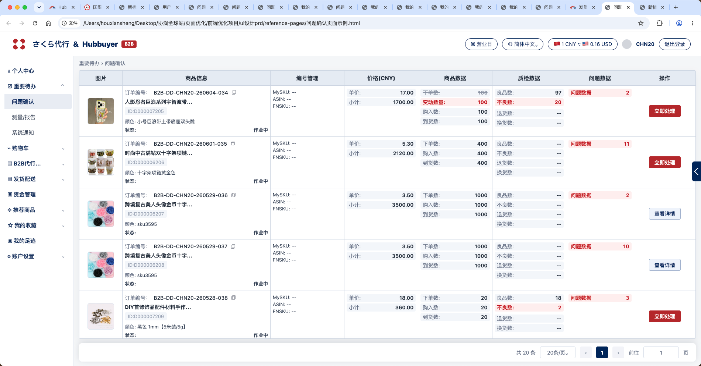
来源示例：问题确认页面示例.html
页面目标
- 让用户在重要待办中快速识别需要确认的问题商品，并优先处理异常数量和问题数据。
- 在同一列表中集中展示商品信息、规格、价格、商品数据、质检数据、问题数据和操作入口。
- 保持与我的商品、订单详情等页面一致的图片、字段、编号复制、商品名称弹框和表格行高规则。
数据范围
- 列表默认展示共
20条问题确认数据，底部分页显示共 20 条、20条/页。 - 示例路径为重要待办 > 问题确认，左侧导航中“重要待办”展开，“问题确认”高亮。
- 示例行展示商品图、订单编号、商品名称、ID、状态、MySKU、ASIN、FNSKU、规格、价格、业务数量、质检数量、问题数据和操作；首行展示下单数量变动、不良数高亮和问题数据高亮。
页面结构与展示规则
| 模块 | 需求说明 |
|---|---|
| 页面入口 | 页面归属重要待办模块，面包屑展示“重要待办 > 问题确认”，侧边栏保持“问题确认”选中状态。 |
| 表格列 | 列顺序为：图片、商品、编号管理、规格、价格(CNY)、商品数据、质检数据、问题数据、操作。 |
| 图片列 | 商品图固定 72x72，使用 contain 展示，图片列内水平居中；悬停或键盘聚焦时显示放大预览。 |
| 商品列 | 订单编号放在第一行且字号与商品名称一致；商品名称、ID、状态依次展示；商品名称过长时单行省略。 |
| 编号管理 | 单独展示 MySKU、ASIN、FNSKU，与商品名称首行顶部对齐，不与商品列混排。 |
| 规格 | 展示颜色、型号、尺码等规格信息，长文本允许自然换行但不得撑高整行。 |
| 价格(CNY) | 展示单价和小计；状态不放在价格列，避免与价格信息混淆。 |
| 商品数据 | 展示下单数、购入数、到货数，字段使用统一浅底数据行，数字右对齐加粗。当下单数量发生变动时，原“下单数”保留灰色删除线，新增“变动数量”字段，整行使用浅红底和红色文字高亮。 |
| 质检数据 | 展示良品数、不良数、退货数、换货数；不良数大于 0 时，“不良数:”标签和数量整行使用浅红底、红色文字突出风险。 |
| 问题数据 | 展示问题数量标签，使用浅红底和红色文字；左侧标签为“问题数据”，右侧数量右对齐加粗，数量必须完整显示，不得因列宽被裁切。 |
| 操作列 | 待处理数据使用红色“立即处理”主操作；已进入查看状态的数据使用浅蓝描边“查看详情”。按钮居中、不换行。 |
| 行高规则 | 列表行保持紧凑展示，默认行高约 112px，20 条数据通过表格区域滚动承载，不拉高页面整体高度。 |
交互规则
- 点击“立即处理”进入问题处理流程；点击“查看详情”进入问题详情或关联商品详情。
- 商品名称超出列宽时默认省略，鼠标悬停、鼠标选中或键盘聚焦时弹框展示完整商品名称。
- 订单编号文字和复制图标均可点击复制完整订单编号，复制成功后给出轻提示。
- 图片支持悬停或键盘聚焦放大预览；图片加载失败时保留 72x72 占位，不影响行高。
- 分页支持展示总条数、每页条数、当前页、前后翻页和前往页码输入。
验收标准
- 页面在 1366px 桌面宽度下不出现页面级横向滚动，操作列和问题数据列完整显示。
- 20 条问题确认数据可通过表格区域滚动查看，底部分页固定在可视区域底部。
- 商品图均为 72x72，水平居中，不因行高收紧而被裁切。
- 商品列、编号管理列、规格列拆分清晰，MySKU、ASIN、FNSKU 不混入商品列。
- 首行存在变动数量时，原下单数必须显示删除线，变动数量整行浅红底和红色文字；无变动的行保持普通字段条。
- 问题数据必须整行浅红底、红色文字并完整显示数量；不良数大于
0时，标签和数字整行浅红底、红色文字；无值或0值按通用规则显示为--。 - 商品名称弹框、订单编号复制、图片放大、立即处理和查看详情均可正常触发。
13. 优化点11：测量报告页面
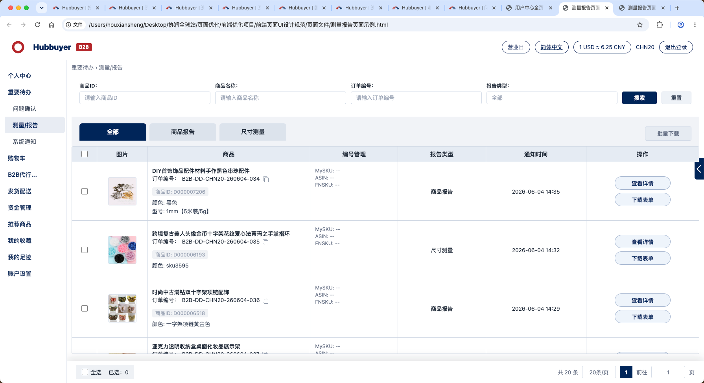
来源示例：测量报告页面示例.html
| 优化对象 | 需求说明 |
|---|---|
| 筛选区 | 支持商品 ID、商品名称、订单编号筛选；搜索和重置样式统一。 |
| 报告 Tabs | 商品报告、尺寸测量使用统一 Tabs，状态数量按半角括号展示。 |
| 商品列 | 取消独立“编号管理”列，将订单编号、商品标题、商品 ID、MySKU、ASIN、FNSKU 合并到商品列；商品标题鼠标悬停、鼠标选中或键盘聚焦时弹框显示完整商品名称。 |
| 图片 | 商品图片可悬停放大，点击预览。 |
| 报告类型 | 商品报告、尺寸测量使用统一状态标签，但颜色区分清晰。 |
| 操作 | “查看详情”跳转测量报告详情页；“下载表单”属于文件动作，保留次按钮。 |
验收标准
- 批量下载未选择数据时有明确不可用状态。
- MySKU、ASIN、FNSKU 在列表中展示摘要，点击编号区域弹窗展示完整信息。
- 测量报告商品标题超出列宽时默认省略，鼠标悬停、鼠标选中或键盘聚焦时弹框展示完整商品名称。
- 详情页下载按钮与列表下载按钮样式一致。
14. 优化点12：系统通知页面
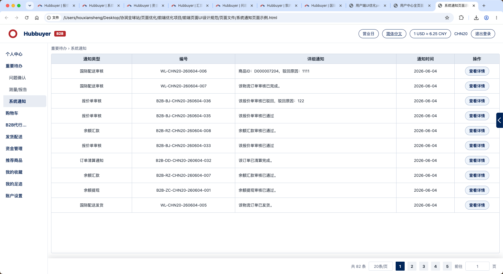
来源示例：系统通知页面示例.html
| 字段/模块 | 要求 |
|---|---|
| 通知类型 | 居中展示，宽度固定，支持多语言长度。 |
| 编号 | 完整展示通知关联编号或业务编号。 |
| 详细通知 | 通知标题 1 行、内容摘要最多 2 行，超出省略，悬停显示完整内容。 |
| 通知时间 | 统一 13px / #667085，不换行，按用户地区展示时间格式。 |
| 查看详情 | 统一使用浅蓝描边圆角入口，点击进入通知详情页。 |
验收标准
- 通知详情页展示通知类型、编号、完整通知内容、通知时间和关联业务信息。
- 未读提示明显但不抢主操作。
- 关联业务入口放在详情页底部，不替代“查看详情”。
15. 优化点13：我的仓库页面
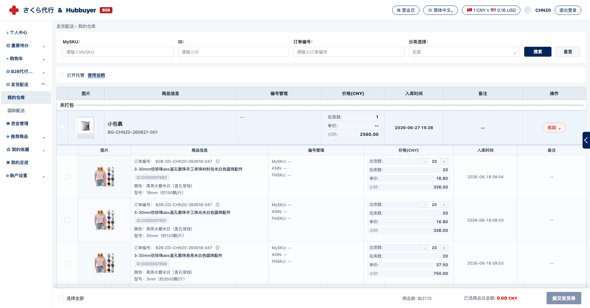
来源示例：我的仓库页面示例.html
优化目标
- 让用户在发货配送模块中快速筛选、查看和选择可发货商品。
- 统一仓库商品列表的信息层级，保证商品图、商品信息、编号管理、价格、入库时间和操作列在一屏内完成识别。
- 支持小包裹父行默认收起，展开后以独立子表展示包裹内商品，并保证父级与子级有明显层级区分。
- 底部提交发货单操作保持固定，避免用户滚动列表时丢失批量操作上下文。
| 优化对象 | 需求说明 |
|---|---|
| 页面入口 | 页面位于发货配送模块，面包屑展示“发货配送 › 我的仓库”，左侧导航高亮“我的仓库”。 |
| 筛选区 | 筛选项包含 MySKU、ID、订单编号、分类选择；搜索使用深蓝主按钮，重置使用浅灰描边次按钮。筛选区固定在列表上方，不参与列表内部滚动。 |
| 托管入口 | 筛选区下方展示“打开托管”和“使用说明”。使用说明为辅助文字链接，视觉权重低于搜索、提交发货单等主操作。 |
| 列表滚动 | 页面整体不滚动，仅商品列表区域滚动；表头固定在列表顶部，底部提交栏固定在页面底部。 |
| 表格列 | 主表列顺序为：复选框、图片、商品信息、编号管理、价格(CNY)、入库时间、备注、操作；操作列固定为 12%，商品信息和价格列不得过宽，备注列需保留足够展示空间。 |
| 小包裹父行 | 小包裹作为父级行展示，默认收起；父行商品信息只展示“小包裹”和包裹编号，不展示“全部”等概况标签。父行图片使用小包裹图片，鼠标悬停或键盘聚焦时同样支持放大预览。 |
| 小包裹子表 | 点击父行“展开”后，在父行下方展示独立子表；子表列顺序为：复选框、图片、商品信息、编号管理、价格(CNY)、入库时间、备注。子表不展示操作列，子表表头和列宽不需要与主表列宽对齐，不额外增加留白缓冲列。 |
| 商品信息 | 订单编号放在第一行且字号与商品名称一致；商品名称默认单行省略，鼠标悬停、鼠标选中或键盘聚焦时展示完整商品名称。商品信息内展示ID、颜色和型号；入库时间单独放入“入库时间”列。 |
| 图片 | 商品图片在图片列内居中展示，悬停或键盘聚焦时显示放大预览。 |
| 编号管理 | 展示 MySKU、ASIN、FNSKU；内容顶部与商品名称对齐，避免垂直居中导致跨列信息错位。 |
| 入库时间 | 独立展示商品入库时间，按时间字段倒序排列；日期时间单行居中展示。 |
| 价格(CNY) | 展示出货数、在库数、单价、小计；出货数支持步进器；四个价格字段竖向单列展示，不并排显示。 |
| 复选框 | 点击普通商品行复选框后整行高亮，并在首列显示蓝色选中线；点击小包裹父级复选框时，必须同步选中或取消该包裹下全部子级商品复选框。底部“选择全部”可同步全部可选商品行状态。 |
| 底部提交栏 | 底部固定展示选择全部、商品数、已选商品总金额和“提交发货单”按钮；长商品名或列表滚动不影响底部操作可见性。 |
交互说明
- 点击订单编号文字或复制图标时复制完整订单编号，并展示“复制成功”轻提示。
- 点击商品图片或键盘聚焦商品图片时展示放大预览，预览不遮挡当前行核心操作。
- 小包裹默认收起；点击“展开”显示子表并将按钮切换为“收起”，再次点击后隐藏子表。
- 小包裹父级复选框与子级复选框双向联动；父级选中时子级全部选中，子级全部选中时父级同步为选中态。
- 点击复选框时更新行选中态、底部选中态和金额汇总；全选后所有商品行必须同步高亮。
- 列表数据默认按入库时间倒序排列，新入库商品在前。
验收标准
- 1366px 桌面宽度下，主列表不出现页面级横向滚动。
- 页面整体不滚动，商品列表区域可独立滚动，表头和底部提交栏保持可见。
- 商品名称、编号管理、价格和入库时间首行跨列顶部对齐；价格(CNY)列竖向单列展示。
- 商品图片在图片列水平居中，悬停放大效果可正常触发。
- 小包裹父行默认收起，父行不展示“全部”标签；展开后子表与父行层级清晰，子表表头和列宽独立于主表，且没有多余空白缓冲列。
- 小包裹父级复选框可一次选中或取消全部子级商品，子级选择状态变更后父级选中态同步准确。
- 复选框选中后整行高亮，取消选中后恢复默认行样式。
16. 优化点14：确认发货页面
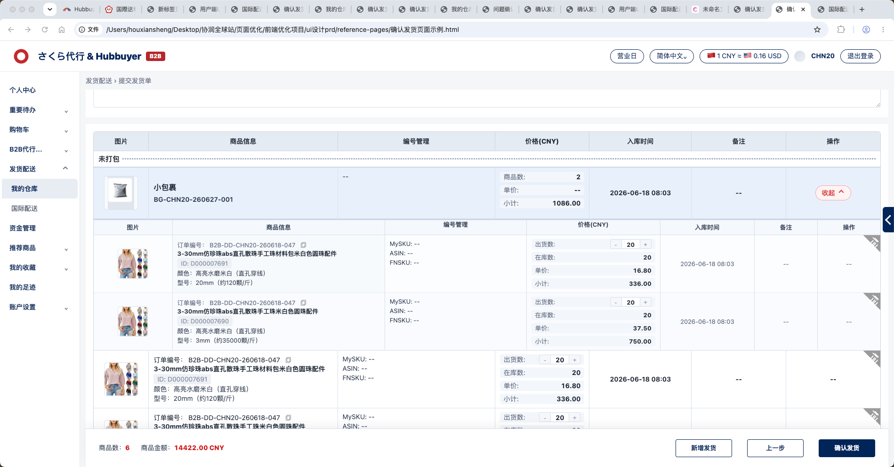
来源示例：确认发货页面示例.html
优化目标
- 让用户在提交发货单流程中完成地址确认、关税缴纳方式、国际物流方式、附加项、备注和待发货商品确认。
- 新增发货通过抽屉完成，不打断主流程；选中商品后可回填到主列表并继续确认发货。
- 发货商品列表按入库时间倒序排列，未打包商品集中展示，确保用户在确认发货前能核对出货数、在库数、单价、小计和商品金额汇总。
| 优化对象 | 需求说明 |
|---|---|
| 页面入口 | 页面位于发货配送模块，面包屑展示“发货配送 › 提交发货单”，左侧导航保持发货配送上下文。 |
| 地址确认 | 顶部展示收货地址和进口商地址，均使用下拉选择框；每个地址字段右侧提供新增入口，便于补充地址资料。 |
| 关税缴纳方式 | 展示“发票支付(运输公司代付后结算)”和“进口商关税账户”两种单选方式，默认选中项使用红色强调。 |
| 国际物流方式 | 物流方式以卡片展示物流方案、运输信息、运输时效、支持品类和限制品类；保留电池、磁铁、液体、普通商品能力判断，不展示 FBA/RS、粉末、超大列。 |
| 发货附加项 | 展示外箱FBA贴、托盘发送、外箱熏气泡模、打木架等附加项，并提示费用将在包装完成后与运输费用一起收取。 |
| 备注 | 备注区使用大文本框，位置位于物流和附加项之后，便于在提交前补充发货说明。 |
| 主商品列表 | 列顺序为：图片、商品信息、编号管理、价格(CNY)、入库时间、备注、操作。列表按“未打包”分组展示，主页面操作列保留，用于移除已加入发货单的商品。 |
| 商品信息 | 订单编号放在第一行且字号与商品名称一致；商品名称默认单行省略，鼠标悬停、鼠标选中或键盘聚焦时展示完整商品名称。商品信息内展示 ID、颜色和型号；入库时间单独放入“入库时间”列。 |
| 价格(CNY) | 价格列展示出货数、在库数、单价和小计；出货数使用减号、数字、加号组成的步进器，数值不得超过在库数，小计随出货数变化同步更新。 |
| 编号复制 | 订单编号文字和复制图标均可点击复制，复制后在页面中部展示绿色“复制成功”提示，提示不遮挡列表布局。 |
| 新增发货抽屉 | 点击底部“新增发货”打开右侧抽屉；数据来源为我的仓库未打包数据。抽屉列表列顺序为：复选框、图片、商品信息、编号管理、价格(CNY)、入库时间、备注；抽屉不展示操作列。 |
| 抽屉选择 | 抽屉内单行复选框和“选择全部”支持选中状态；选中后整行高亮，复选框列需要有足够宽度，不得遮挡勾选框。 |
| 回填主列表 | 抽屉内选中商品后点击“提交发货单”，将选中商品回填追加到主列表，并自动带上主列表操作列的移除入口。 |
| 移除确认 | 点击主列表操作列的删除图标时弹出二次确认，提示文案为“是否移除发货单”；用户点击确认移除后才删除该行。 |
| 底部操作栏 | 底部固定展示商品数、商品金额汇总，以及“新增发货”“上一步”“确认发货”。商品数和商品金额使用红色强调；滚动页面内容时底部主操作始终可见。 |
| 排序规则 | 主列表和抽屉列表均按入库时间倒序排列；入库时间以独立列单行居中展示，列宽需保证日期时间不溢出。 |
交互说明
- 点击“新增发货”打开右侧抽屉，并加载我的仓库未打包数据；点击抽屉关闭按钮或遮罩可关闭抽屉。
- 抽屉内点击单行复选框后整行高亮；点击“选择全部”后所有可选商品同步高亮。
- 点击抽屉“提交发货单”后，所有选中商品回填到主列表，并按时间倒序重排。
- 点击主列表商品行右上角 X 时必须先展示“是否移除发货单”确认框，确认后再删除。
- 点击价格列出货数的减号或加号时更新出货数、小计、底部商品金额汇总；出货数最小为 1，最大不得超过在库数。
- 点击订单编号文字或复制图标时复制完整编号，并展示页面中部“复制成功”轻提示。
验收标准
- 1366px 桌面宽度下，主页面和抽屉列表均不出现页面级横向滚动。
- 抽屉复选框列宽足够，复选框不能被表格边框遮盖。
- 抽屉列表不展示操作列；主页面列表保留操作列和移除删除图标。
- 选中抽屉商品后点击“提交发货单”，商品能回填到主列表，且主列表按入库时间倒序排列。
- 主列表必须展示“未打包”分组行；价格列出货数步进器、在库数、单价、小计完整可读，出货数变更后金额汇总同步更新。
- 底部汇总必须展示商品数和商品金额，商品数与商品金额使用红色强调，和截图中的主操作按钮保持同一底部栏。
- 商品名称悬停或聚焦时只显示一个完整名称提示，不出现浏览器原生提示和自定义提示叠加。
- 底部固定操作栏始终可见，长商品名、抽屉打开和列表滚动不影响主操作可用性。
17. 优化点15：国际配送页面
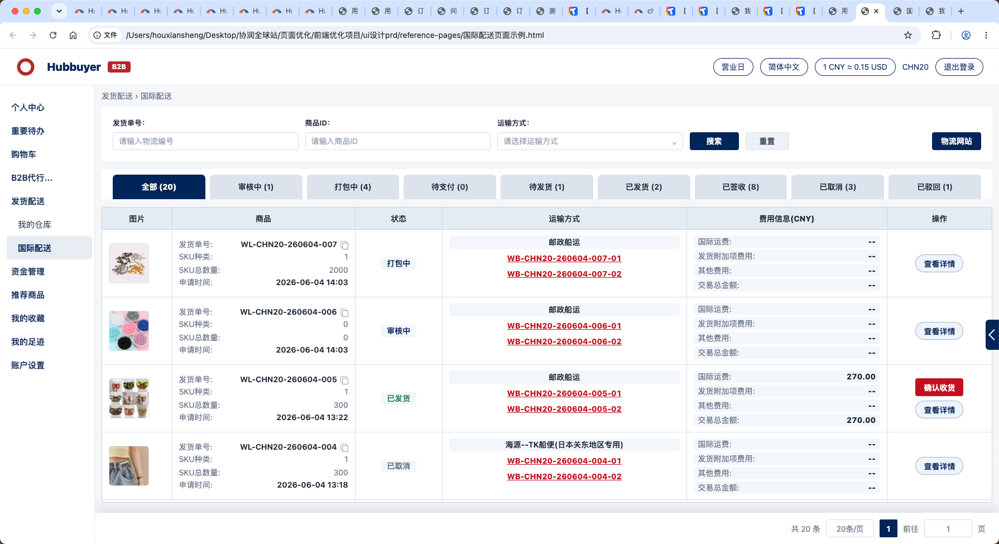
来源示例：国际配送页面示例.html
列表优化
- 商品 ID 搜索、状态筛选、搜索按钮、重置按钮统一样式。
- 商品图片支持悬停放大，商品信息按标题、规格、编号分层展示。
- 商品、运输方式、费用信息采用左侧字段名 + 右侧值的结构。
- 交易总金额为空或
--时不重复占用行。
操作优化
- “确认收货”属于强业务动作，保留明显操作样式。
- “使用说明”属于帮助入口，使用灰蓝文字链接或问号图标 + tooltip。
- 首页国际配送状态卡跳转后必须匹配列表状态 Tabs。
验收标准
- 物流号、渠道、状态、金额和操作列视觉统一。
- 详情页和发票页延续列表状态色和金额层级。
18. 优化点16：国际配送详情页面
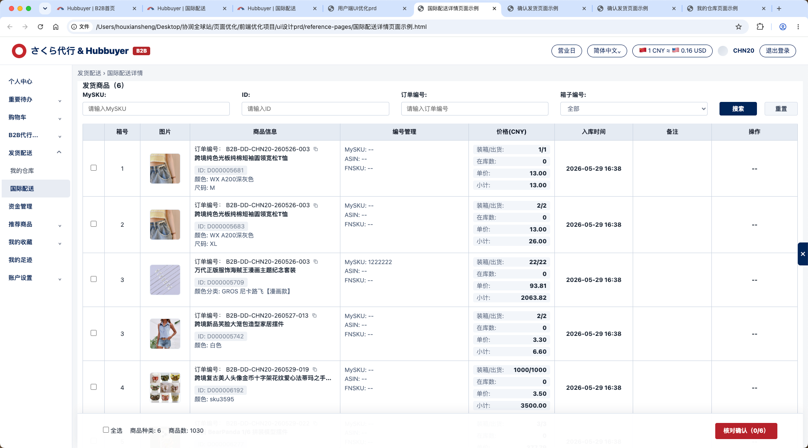
来源示例：国际配送详情页面示例.html
页面范围
- 页面用于承接国际配送列表的“查看详情”，展示单个发货单的状态、物流、费用、箱子数据和发货商品。
- 基础信息区展示发货单号、申请时间、审核通过时间、发货时间、签收状态和国际物流名称。
- 下载类动作包括下载发货单、下载纳品书、下载包裹明细；查看地址/进口商关税账户作为主次操作入口。
布局要求
- 顶部详情信息使用单行概要 + 状态区，状态色、金额色和按钮层级与国际配送列表保持一致。
- 箱子数据表格独立展示，表头包含 NO.、箱子编号、运单号、SKU 种类、商品总数量、长宽高、重量和体积重。
- 发货商品列表采用筛选区 + 表格区 + 底部核对栏，底部核对栏固定在页面下方且不遮盖最后一行商品内容。
| 模块 | 需求说明 |
|---|---|
| 基础信息 | 发货单号文字和复制图标均可复制完整编号，复制后在页面中间显示“复制成功”轻提示，只出现一个提示。 |
| 箱子数据 | 运单号使用红色链接样式；费用汇总展示发货总重量、国际运费、发货附加项、其他费用和总金额，金额单位完整显示。 |
| 发货商品筛选 | 支持 MySKU、ID、订单编号、箱子编号筛选；搜索按钮使用深蓝主按钮，重置按钮使用灰色次按钮，符合 UI 设计规范。 |
| 商品表格 | 表头拆分为图片、商品信息、编号管理、箱号、商品费用(CNY)、备注、操作；ID 文案统一为“ID”，不得使用单独“ID”。 |
| 商品信息 | 商品名称默认按列宽省略，鼠标悬停或选中文本时展示完整商品名称；订单编号完整展示并带复制图标，不得截断编号。 |
| 图片预览 | 图片列居中展示，悬停放大预览不得遮盖最后一行内容，点击图片可打开预览弹层。 |
| 核对确认 | 选中商品后整行展示选中态；底部固定栏显示全选、商品种类、商品数和“核对确认（已选/总数）”，滚动时始终可见。 |
交互说明
- 列表默认按提交时间或业务产生时间倒序排列，最新数据优先展示。
- 勾选单行或全选后，底部核对数量实时联动；取消勾选后恢复默认行样式。
- 复制发货单号、订单编号、商品编号时，点击文字和点击复制图标均触发同一个复制成功提示。
- 搜索、重置、下载、核对确认按钮的尺寸、颜色、圆角和间距必须与 UI 设计规范一致。
验收标准
- 国际配送列表点击查看详情可打开该详情页，面包屑显示“发货配送 › 国际配送详情”。
- 发货商品表格列宽稳定，1366px 桌面宽度下不出现页面级横向滚动。
- 商品表格最下面一行必须保留完整横线，不被底部固定栏或图片预览遮盖。
- 全选、商品种类、商品数和核对确认按钮在页面底部固定展示，长列表滚动时可用。
19. 优化点17：国际配送-待审核详情页面
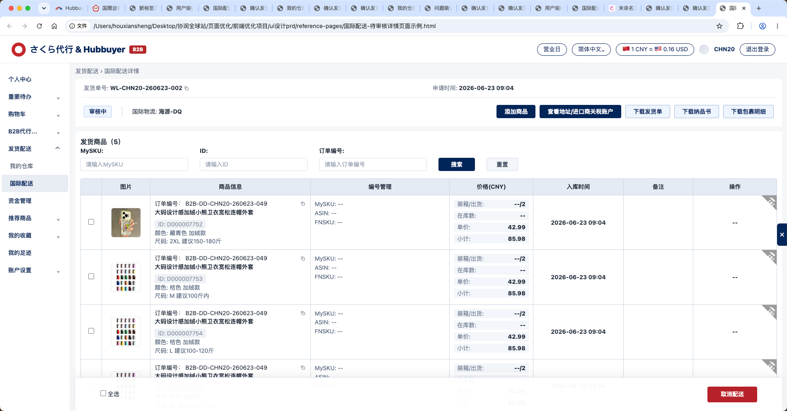
来源示例：国际配送-待审核详情页面示例.html
页面范围
- 页面用于承接国际配送列表中“审核中 / 待审核”状态的详情查看。
- 顶部展示发货单号、申请时间、审核中状态、国际物流方式和相关下载动作。
- 待审核状态下支持添加商品、查看地址/进口商关税账户、下载发货单、下载纳品书、下载包裹明细和取消配送。
布局要求
- 页面延续国际配送详情页的顶部、侧边栏、面包屑、按钮、表格和图片预览规范。
- 待审核状态不展示箱子数据汇总；主内容聚焦发货商品列表。
- 底部固定操作栏仅保留“取消配送”，不得遮盖列表最后一行。
| 模块 | 需求说明 |
|---|---|
| 状态区 | 状态显示为“审核中”，使用蓝色弱底标签；国际物流显示为“海源-DQ”。 |
| 发货商品筛选 | 支持 MySKU、ID、订单编号筛选；搜索为深蓝主按钮，重置为灰色次按钮。 |
| 商品表格 | 表头拆分为图片、商品信息、编号管理、箱子编号、商品费用(CNY)、备注、操作；规格和订单信息已合并进商品信息列，不再独立成列。 |
| 商品信息 | 商品信息列第一行展示订单编号且字号与商品名称一致；包含商品名称、ID、颜色、尺码和入库时间；商品名称超出列宽时省略，悬停或聚焦展示完整内容。 |
| 编号管理 | MySKU、ASIN、FNSKU 统一放入编号管理列；缺失值使用 --。 |
| 费用数据 | 商品费用以字段条展示；0 值统一显示为 --，例如装箱/出货显示 --/2，在库数显示 --。 |
| 移除操作 | 每行右上角垃圾桶删除图标为轻操作，点击后弹出居中确认框，提示“是否取消配送”，按钮为“取消”和“确认”。 |
| 列宽 | 商品信息列不得过宽，备注列需预留可读空间；1366px 桌面宽度下不得出现页面级横向滚动。 |
交互说明
- 点击发货单号、订单编号文字或复制图标均可复制完整编号，并在页面中间显示一次“复制成功”提示。
- 点击商品图片打开预览弹层，悬停图片显示放大预览，预览不得遮挡底部固定按钮。
- 点击删除图标时只弹出一个确认框；点击取消、确认或遮罩关闭确认框。
- 点击底部“取消配送”按钮保留为待审核详情页主撤销动作，按钮文案不得再显示“取消订单”。
验收标准
- 访问路径
reference-pages/国际配送-待审核详情页面示例.html可直接打开页面。 - 商品表格中不存在独立的“规格”和“订单信息”列。
- 所有 0 值按页面规则展示为
--，不得展示裸数字 0。 - 弹框格式与示例一致，居中白色弹框，文案为“是否取消配送”，按钮为“取消 / 确认”。
20. 优化点18：资金管理页面
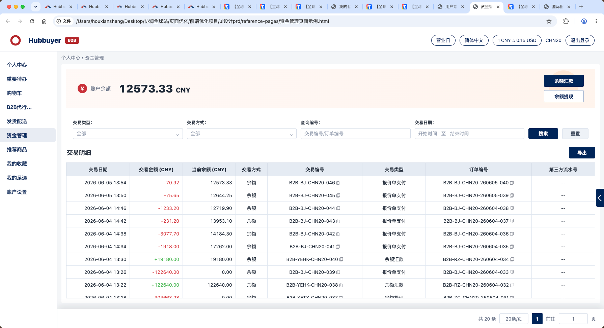
来源示例：资金管理页面示例.html
| 模块 | 要求 |
|---|---|
| 账户余额 | 余额作为主信息展示，币种与金额分开排版，主操作使用主按钮。 |
| 交易明细筛选 | 支持交易编号/订单编号搜索；搜索和重置样式统一。 |
| 交易编号 | 交易编号和订单编号完整展示；编号文字和复制图标均可点击复制完整编号。 |
| 金额列 | 金额右对齐，交易金额使用 14px / 700 / #B4272B，币种弱化。 |
| 时间列 | 统一时间格式，按用户地区展示，不换行。 |
验收标准
- 交易类型、流水号、订单号、时间、金额层级稳定。
- 交易编号、订单编号文字和复制图标均可点击复制完整编号。
- 交易明细、费用明细中的“查看详情”统一跳转详情页。
21. 优化点19：余额汇款页面
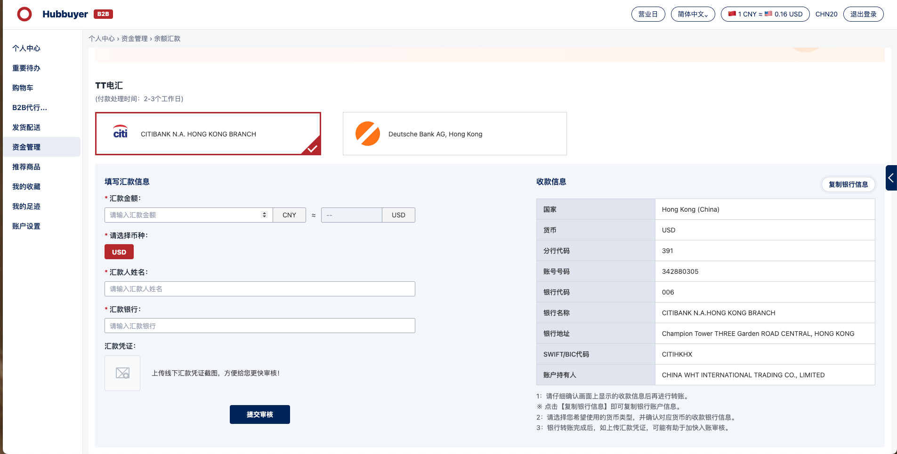
来源示例：余额汇款示例页面.html
页面范围
- 页面用于资金管理模块中用户发起余额汇款，承接资金管理页“余额汇款”入口。
- 页面展示账户余额、汇款记录入口、TT 电汇说明、收款银行选择、汇款信息填写和收款信息确认。
- 用户填写汇款金额、币种、汇款人姓名、汇款银行，可上传线下汇款凭证并提交审核。
设计原则
- 页面沿用用户中心统一顶部栏、侧边栏、面包屑、表单控件、主按钮和复制提示样式。
- 金额作为主信息展示，数字与币种分层排版，输入框高度统一为 32px。
- 收款银行信息必须清晰可复制，复制后统一展示页面中部绿色“复制成功”轻提示。
| 模块 | 需求说明 |
|---|---|
| 账户余额 | 顶部余额卡展示账户余额，金额使用大字号加粗，币种与数字分开排版；右侧提供“汇款记录”次级入口。 |
| 电汇说明 | 标题显示“TT电汇”，下方展示付款处理时间说明“2-3个工作日”，说明文字弱化展示。 |
| 银行选择 | 银行卡片展示银行标识与银行名称；当前选中银行使用红色描边和右下角选中角标，未选中银行保持浅色边框。 |
| 汇款信息 | 必填项包括汇款金额、币种、汇款人姓名、汇款银行；必填星号使用红色；金额输入支持 CNY 到 USD 的换算展示。 |
| 汇款凭证 | 上传区域使用图片加号占位符，不使用文字按钮；辅助文案提示上传线下汇款凭证截图可加快审核。 |
| 收款信息 | 右侧表格展示国家、货币、分行代码、账号号码、银行代码、银行名称、银行地址、SWIFT/BIC代码、账户持有人。 |
| 复制银行信息 | “复制银行信息”为胶囊次级入口，点击后复制完整收款信息，并在页面中部展示绿色“复制成功”提示。 |
| 提交审核 | “提交审核”为深蓝主按钮，按钮高度不低于 40px，位置与表单内容对齐，点击后进入审核流程。 |
交互说明
- 点击银行卡片切换选中态，同一时间只能选中一个收款银行。
- 点击“复制银行信息”复制当前选中银行的完整收款信息，提示文案固定为“复制成功”。
- 复制提示统一居中展示，浅绿色底、绿色文字、绿色圆形勾选图标，不使用“已复制”或英文提示。
- 点击汇款凭证占位符触发上传凭证动作；上传组件样式保持 76px 正方形图片占位。
验收标准
- 顶部栏、侧边栏、面包屑、余额卡、表单控件、按钮和复制提示符合 UI 设计规范。
- 银行选中态与示例一致，红色描边和右下角勾选角标不得缺失。
- 汇款凭证上传占位符必须为图片加号样式，不得使用斜纹占位或纯文字按钮。
- 所有复制成功提示均展示“复制成功”，位置居中，颜色与全局绿色提示样式一致。
22. 优化点20：余额提现页面
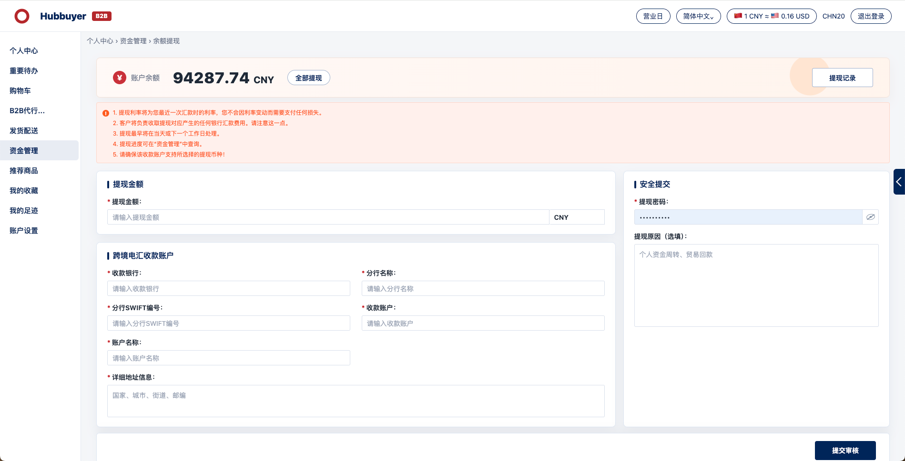
来源示例：余额提现示例页面.html
页面范围
- 页面用于资金管理模块中用户发起余额提现，承接资金管理页“余额提现”入口。
- 页面展示账户余额、全部提现、提现记录入口、提现说明、提现金额、跨境电汇收款账户、安全提交和提交审核。
- 用户填写提现金额、币种、收款银行、分行名称、分行 SWIFT 编号、收款账户、账户名称、详细地址、提现密码和提现原因后提交审核。
设计原则
- 页面沿用用户中心统一顶部栏、侧边栏、面包屑、表单控件、按钮和资金管理视觉规范。
- 账户余额作为页面主信息展示，金额字号高于普通表单，币种与金额分层排版。
- 页面采用左侧表单、右侧安全提交、底部提交操作区的结构，避免用户误认为可跳过必填信息直接提交。
- 表单控件高度、边框、间距、必填星号、密码显隐图标和主按钮样式必须与 UI 设计规范保持一致。
| 模块 | 需求说明 |
|---|---|
| 账户余额 | 顶部余额卡展示账户余额，金额使用大字号加粗，币种紧随金额；金额旁展示“全部提现”轻量按钮，右侧提供“提现记录”入口。 |
| 全部提现 | “全部提现”为金额旁轻量操作，点击后自动将可提现余额回填到提现金额输入框。 |
| 提现提示 | 余额卡下方展示浅红提示区，说明提现汇率、银行费用、处理时间、查询入口和提现币种限制；提示区不可关闭。 |
| 提现金额 | 提现金额为必填项，独立卡片展示；输入框右侧为币种下拉，默认展示 USD/CNY，控件高度、边框和下拉箭头遵循 UI 设计规范。 |
| 跨境电汇收款账户 | 独立卡片展示收款信息，必填项包括收款银行、分行名称、分行 SWIFT 编号、收款账户、账户名称、详细地址信息；字段使用两列栅格，详细地址横跨整行。 |
| 安全提交 | 右侧卡片展示提现密码和提现原因。提现密码为必填密码框，右侧提供眼睛显隐图标；提现原因使用加高多行文本框，示例文案为“个人资金周转、贸易回款”。 |
| 提交审核 | 底部提交区承接页面底部剩余空间，使用白底、边框和轻阴影；“提交审核”为深蓝主按钮，靠右展示，点击后进入提现审核流程。 |
交互说明
- 点击“全部提现”后，提现金额输入框填入当前账户余额中的可提现金额。
- 点击“提现记录”进入余额提现记录页面，保留当前资金管理模块导航态。
- 点击提现密码右侧图标切换明文/密文展示，不改变输入框尺寸。
- 提现提示区仅作风险和流程说明，不提供关闭入口，避免用户遗漏关键费用和处理时间信息。
- 提交审核前校验所有必填项，缺失字段按统一表单错误样式提示。
验收标准
- 顶部栏、侧边栏、面包屑、余额卡、表单控件、按钮和输入框边框符合 UI 设计规范。
- “全部提现”“提现记录”“提交审核”的按钮层级清晰，主次操作不会混淆；底部提交区放大至页面底部剩余空间。
- 提现金额、收款账户、安全提交和提现提示内容完整展示，字段对齐清晰，长内容不撑破页面。
- 页面无需滚动即可看到核心表单、提现原因和提交审核按钮。
23. 优化点21：提现记录、充值记录页面
页面范围
- 提现记录页面用于查看用户提交的余额提现申请、审核状态、提现金额、币种、收款账户和处理时间。
- 充值记录页面用于查看用户余额汇款、充值入账、审核状态、充值金额、币种、交易编号和到账时间。
- 两个页面属于资金管理模块，顶部导航、侧边栏、面包屑和资金管理菜单选中态保持一致。
- 记录列表默认按时间倒序展示，最新提交或最新入账记录排在最上方。
交互规范
- 筛选区遵循客户端 UI 交互规范，包含记录类型、状态、交易编号、订单编号、日期范围、搜索和重置。
- 状态使用统一状态标签，不使用大面积按钮；审核中、已通过、已驳回、已入账等状态颜色需与资金管理页面一致。
- 交易编号、订单编号、流水号文字和复制图标均可点击复制，复制成功提示统一使用绿色居中弹框。
- 金额列右对齐并使用等宽数字；收入金额和支出金额按资金管理规则区分颜色。
验收标准
- 提现记录和充值记录页面可从余额提现、余额汇款、资金管理入口进入，返回时保留资金管理模块上下文。
- 列表字段不横向溢出，长编号默认完整优先展示；不足时悬停或点击展示完整内容。
- 搜索、重置、分页、复制、查看详情等交互符合《客户端UI交互规范.html》。
- 记录列表按时间倒序排列，筛选后仍保持倒序。
24. 优化点22：购物车页面
购物车列表
- 商品图、标题、编号管理、数量、单价、小计、备注和备注图片层级固定。
- 商品标题支持鼠标悬停、鼠标选中或键盘聚焦时弹框显示完整商品名称，不撑开商品列。
- 数量、单价、小计三列数字统一居中并加粗。
- 数量数字使用
#1F2937，单价和小计使用#B4272B。 - 顶部提示条说明未在 1688 或淘宝找到商品时，可通过右上角“手动下单”或联系业务人员处理。
手动下单入口与抽屉
- “手动下单”入口放在购物车 Tab 区右侧，使用图标加文字，不使用大面积主按钮。
- 点击后以右侧抽屉打开，不发生页面跳转；左侧购物车页面保留半透明遮罩，用户仍能识别当前上下文。
- 抽屉标题为“手动下单”，表格字段包括图片、必填商品标题、规格(至少填一项)、必填数量、必填单价(CNY)、小计(CNY)、备注、备注图片和操作。
- 抽屉内表头使用浅灰蓝底，输入框、上传位、数量步进器、底部主次按钮按客户端 UI 设计规范统一。
- 数量和单价变更后，小计实时联动；“新建SKU”新增空白行，“加入购物车”为主操作。
操作与汇总
- 删除、复制等轻操作使用图标化入口，抽屉操作列图标风格保持一致。
- 批量删除商品需弹窗确认。
- 底部展示 SKU 种类、商品总数和商品金额。
- 长商品名、多币种金额不得遮挡底部主操作。
验收标准
- PRD 截图与
reference-pages/购物车页面示例.html当前购物车主列表一致，包含右上角“手动下单”入口。 - 商品金额、数量、小计数字稳定对齐。
- 备注、备注图片、SKU 内容不挤压核心金额列。
- 购物车商品标题超出列宽时默认省略，鼠标悬停、鼠标选中或键盘聚焦时弹框展示完整商品名称。
- 点击“手动下单”后右侧抽屉可打开和关闭；抽屉表格不出现页面级横向滚动，底部“新建SKU / 加入购物车”按钮固定在抽屉底部。
- 购物车页面中附加项、费用说明、商品服务详情可跳转对应详情或说明页。
25. 优化点23：购物车物流方式选择
确认订单列表
- 页面保留购物车确认订单上下文，列表表头拆分为「图片、商品、编号管理、商品费用(CNY)、备注、备注图像、附加项」。
- 列表默认展示 20 条商品数据；图片列 72×72 居中展示，鼠标悬停或键盘聚焦时在图片右侧显示 180×180 放大预览。
- 商品列仅展示商品名称和规格；MySKU、ASIN、FNSKU 统一放入编号管理列，避免商品列信息过密。
- 底部固定展示 SKU 数、商品数、商品金额、手续费、附加项费用和报价金额；底部「上一步」「下一步」始终可见。
下一步抽屉
- 点击底部「下一步」后，不跳转页面，右侧以抽屉形式展开「【国际运输方式】选择」。
- 抽屉打开时左侧页面保留遮罩，用户仍能识别当前购物车确认订单上下文。
- 抽屉顶部保留选择提示条，用于说明最快、最便宜和常用物流推荐。
- 抽屉打开时不默认选中任何物流方式；物流方式仅在用户点击后显示选中态。
- 抽屉右上角关闭按钮和遮罩点击均可关闭抽屉；按 Esc 也可关闭抽屉。
物流方式卡片
- 物流方案按「空运」「船运」分组展示，每个物流方式使用单选结构，只允许选择一个国际运输方式。
- 物流卡片必须展示物流名称、运输方式标签、运输时效、可运输品类和限制品类标签。
- 运输方式标签采用灰底小标签：空运使用飞机图标，船运使用船运图标。
- 选中态使用浅红背景、红色描边和右下角红色折角标识；未选中状态保持白底卡片，不出现红框。
- 能力标签只展示当前页面需要判断的品类；不展示「粉末」「超大」「FBA/RSL/ZOZO」标签。
- 底部保留「自动报价单」「委托负责人报价」两个报价动作，按钮层级清晰。
物流排序
- 空运分组按 EMS、流通王、海源--DG(电子特殊航空件)、OCS 的顺序展示。
- 船运分组位于空运分组下方，按邮政船运、海源-DQ 的顺序展示。
- 物流列表需保持先空运、后船运的分组层级，不能把船运方式混入空运列表。
- 移动排序后，物流名称、运输方式、时效和可运输品类标签不丢失。
交互说明
- 点击「下一步」打开右侧抽屉；初始不默认选中任何物流方式，点击物流卡片后显示单选选中态，再点击其他物流方式时选中态单选切换。
- 点击「自动报价单」或「委托负责人报价」进入对应报价流程；按钮不被长物流名称或能力标签遮挡。
- 抽屉内物流能力标签换行展示，不挤压右侧运输方式和时效信息。
验收标准
- 购物车物流方式选择页面点击「下一步」后，必须以右侧抽屉形式展开，不发生页面跳转。
- 打开抽屉时不得出现默认红色选中框；用户点击 OCS、EMS、流通王等任一物流卡片后，仅该卡片显示红色选中态。
- 打开抽屉时，空运分组展示 EMS、流通王、海源--DG(电子特殊航空件)、OCS；船运分组展示邮政船运、海源-DQ，并保持指定内部顺序。
- 物流方式卡片不横向溢出，能力标签超出时不遮挡右侧时效和运输方式信息。
- 抽屉中不出现「粉末」「超大」「FBA/RSL/ZOZO」能力标签。
- 1366px 桌面宽度下，主页面列表、图片放大预览、底部固定汇总区和右侧抽屉均不得出现页面级横向滚动。
- 日文、中文和英文环境下，物流名称和提示条文案不造成抽屉宽度变形。
26. 优化点24：附加项管理、番号管理、贴纸制作、洗标制作、FBA制作
功能范围
- 购物车附加服务页包含附加项管理、番号管理、贴纸制作、吊牌制作、洗标制作和 FBA 制作等 Tab。
- 各 Tab 统一使用同一套用户端页面框架、顶部导航、侧边导航、底部操作区和列表交互规范。
- 左侧商品列表用于选择服务作用对象，右侧配置区用于展示当前 Tab 的可选服务、费用、说明和保存动作。
- 切换 Tab 时保留已选商品状态，服务项选中状态按业务类型分别保存。
交互规范
- 附加服务选项支持鼠标滑过和选中态，选中边框使用红色，选中后实时更新预估附加项费用。
- 左侧商品列表仅使用复选框表达选择，不出现整行红色 hover 边框。
- 商品名称、附加项名称超出展示区域时默认省略，鼠标悬停时以弹框展示完整内容。
- 单选服务只允许选中一个，多选服务支持多项叠加；全选、取消全选、保存、重置动作符合统一按钮层级。
验收标准
- 附加项管理、番号管理、贴纸制作、吊牌制作、洗标制作和 FBA 制作的 Tab 样式、间距、选中态一致。
- 服务卡片不横向溢出，长名称必须省略并支持完整内容弹框。
- 商品选择、服务选择、费用汇总和底部操作不会互相遮挡。
- 页面符合《UI交互规范》和《UI设计规范》中关于按钮、复选框、卡片、表格、提示和长文本的规则。
27. 优化点25：收藏商品页面
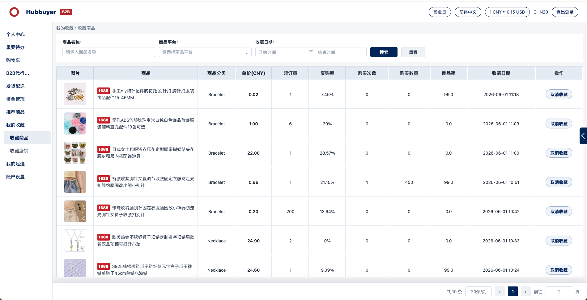
来源示例：收藏商品页面示例.html
| 优化对象 | 需求说明 |
|---|---|
| 筛选区 | 支持商品名称、商品平台、收藏日期筛选；控件样式与用户中心列表统一。 |
| 商品图片 | 商品图 1:1 contain，悬停显示 180x180 放大预览。 |
| 商品标题 | 标题最多两行，超出省略；鼠标悬停、鼠标选中或键盘聚焦时弹框展示完整商品名称。 |
| 商品信息 | 商品分类、平台、价格、收藏日期位置稳定，不因标题长度变化而错位。 |
| 操作列 | 仅保留取消收藏文字操作，不使用大面积按钮。 |
验收标准
- 点击商品图和标题进入商品详情。
- 收藏商品标题弹框显示完整商品名称时，不改变卡片高度和操作列位置。
- 取消收藏操作层级低于主业务操作。
- 收藏店铺不得与商品卡片样式混用。
28. 优化点26：收藏店铺页面
页面范围
- 收藏店铺页面归属「我的收藏」模块，与收藏商品页面并列展示。
- 页面用于查看用户已收藏店铺，包含店铺 Logo、店铺名称、平台/来源、主营类目、收藏时间和操作。
- 支持店铺名称、收藏日期筛选条件，搜索和重置按钮遵循用户端统一样式。
- 列表默认按收藏时间倒序排列，最新收藏的店铺展示在最上方。
交互规范
- 店铺名称超出展示区域时默认省略，鼠标悬停、鼠标选中或键盘聚焦时弹框展示完整名称。
- 点击店铺 Logo 或店铺名称进入店铺详情或店铺商品列表，点击区域需要清晰可识别。
- 取消收藏需二次确认；确认后当前行从列表移除，并刷新收藏数量。
- 批量选择、全选、取消收藏、分页、空状态和加载状态遵循《客户端UI交互规范.html》。
验收标准
- 收藏店铺页面与收藏商品页面导航层级一致，但不得复用商品图片、价格和购买数据字段。
- 列表字段在 1366px 桌面宽度下不横向溢出，长店铺名称必须支持完整内容提示。
- 取消收藏、批量选择和分页交互符合客户端 UI 设计规范与交互规范。
- 无收藏店铺时展示统一空状态，并保留返回收藏商品或继续浏览店铺的入口。
29. 优化点27：账户设置页面
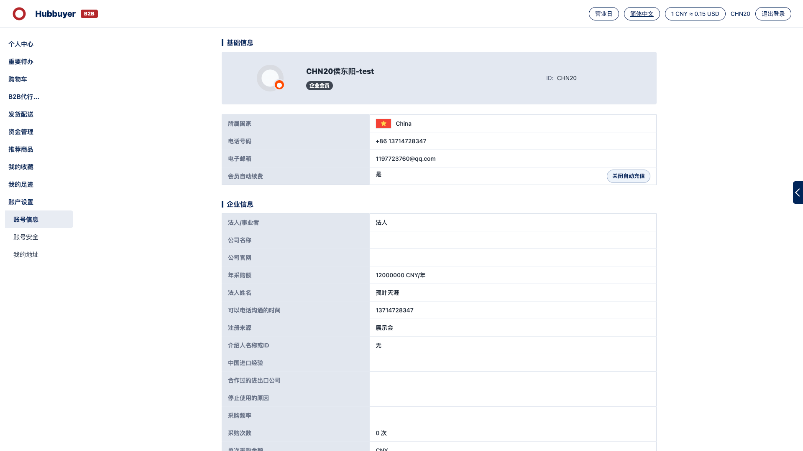
来源示例：账户设置页面示例.html
基础信息
- 资料卡和安全信息分区展示。
- 国家/地区、语言、币种、时区作为基础信息展示。
- 姓名、邮箱、手机号支持国际化格式。
- 语言不作为前台手动切换项时，需要展示系统识别语言。
企业与地址
- 企业信息字段按业务层级展示，不与个人基础信息混排。
- 地址字段按国家/地区适配顺序和必填项。
- 默认地址标签清晰。
- 编辑、删除使用文字操作；详情类操作跳转详情页。
验收标准
- 账户设置中可看到注册国家/地区、系统识别语言、默认币种、时区和地址规则。
- 子账号、地址管理表格使用统一表格样式。
- 地址不只支持中国式“省市区详细地址”。
30. 优化点28：账号安全、我的地址
账号安全
- 账号安全页面展示登录密码、支付密码、绑定邮箱、绑定手机号、第三方绑定和安全状态。
- 修改密码、绑定/解绑邮箱、绑定/更换手机号等操作使用统一按钮层级，不使用大面积说明卡。
- 涉及敏感信息时默认脱敏展示，点击查看或修改时进入二次验证流程。
- 成功、失败、验证过期等提示遵循统一弹窗和消息提示样式。
我的地址
- 我的地址页面展示收货地址、进口商地址、默认地址标记、联系人、电话、国家/地区和详细地址。
- 支持新增、编辑、删除、设为默认；删除地址必须二次确认。
- 地址字段按国家/地区适配，不限定为中国式省市区结构。
- 地址列表默认按更新时间倒序排列，最新编辑或新增的地址排在最上方。
验收标准
- 账号安全与我的地址页面均归属账户设置模块，侧边栏选中态和面包屑保持一致。
- 手机号、邮箱、地址等长文本不撑破布局，必要时使用省略和完整内容提示。
- 新增、编辑、删除、设为默认、二次验证和二次确认交互符合《客户端UI交互规范.html》。
- 页面按钮、输入框、表格、标签和提示符合《客户端UI设计规范.html》。
31. 优化点29：英文版优化内容
| 位置 | 中文名称 | 现在英文名称 | 优化后英文名称 |
|---|---|---|---|
| 菜单栏 | 重要待办 | Important Task | Key Tasks |
| 菜单栏 | B2B代行管理 | B2B Agency Management | B2B Control |
| 菜单栏 | 发货配送 | Delivery Management | Shipment |
| 菜单栏 | 资金管理 | Fund Management | Wallet |
| 菜单栏 | 推荐商品 | Recommended Products | Bestsellers |
| 列表 | 单价 | Price Unit (CYN) | Price (CNY) |
| 列表 | 备注图片 | Remarks | Images |
| 列表 | 报价单支付金额(CNY) | Quotation Amount (CYN) | Total Amount |
| 购物车 | 附加项管理 | Option Management | Optional Services |
| 购物车 | 番号管理 | Number Management | Numeric Details |
| 购物车 | 洗标制作 | Care Label Production | Caretag Production |
| 购物车 | （吊牌，领标，洗标）全标去除 | (Tag, Collar label, Washed label) Removal of all labels | (Hangtag, Collar label, Care label) Label Removals |
| 购物车 | 通常OPP袋更换 | Standard Opp Bag Replacement | Opp Bag Replacements |
| 购物车 | （另购）OPP袋/パッケージ更换（已有另购副资材的情况下） | (Special Order) OPP bag/package replacement | OPP Bag/Packages (Customised Orders) |
| 购物车 | 去掉商品箱--更换成OPP袋（鞋盒等换成OPP作业费+OPP袋费）含 | Remove the product box--replace it with an opp bag | Item Box Switch To OPP Bag |
| 购物车 | （另购）需折叠商品箱---更换 （商品盒折叠作业+更换作业）含 ( 已有--另购商品盒的情况下 ) | (Purchased separately) Need to fold the product box---Replacement (Product box folding operation + replacement operation) including (If you already have a product box purchased separately) | (Foldable Item Box ) Need to fold the product box---Replacement (Product box folding operation + replacement operation) including (If you already have a product box purchased separately) |
| 购物车 | 另购领标替换 | (Custom) Fabric Tag Replacement | Customised Crystal Stickers |
| 购物车 | 贴---尺寸标（有必要的--默认贴） | Paste --- size label (if necessary --- paste by default) | Size Label Stickers |
| 购物车 | 垫薄油纸 | Thin Tissue Paper - Layering | Cutton Paper - Layering |
| 购物车 | 放入感谢卡 | Inserting Printed Materials (Flyers, etc.) | Paper Print Placements |
| 购物车 | 自助报价单 | Self-service Quotation | Client Self Quoting |
验收标准
- 英文环境下，菜单栏、列表字段和购物车附加项文案按上表统一替换。
- 修正
CYN为CNY，金额字段不再出现错误币种缩写。 - 优化后英文名称不得造成按钮、Tab、表头或服务卡片文字溢出。
- 英文、中文、日文切换后，同一业务字段含义保持一致。
32. 通用规则
所有优化点共用规则
| 类型 | 规则 |
|---|---|
| 多语言 | 简体中文、英文、日文、韩文、繁体中文均需验收；缺少翻译时优先回退英文。 |
| 全局说明 | 所有章节和新增内容需与原有页面保持版心一致，版心范围为 1200px-1700px；页面宽度小于 1350px 时，表格出现左右滚动条，不压缩表格。注意：只对页面按钮、页面文字、鼠标悬浮、鼠标选中、点击弹框、抽屉进行统一，不改变业务逻辑。 |
| 菜单栏 | 一级菜单、二级菜单和侧边栏菜单名称必须完整展示，不得以省略号截断；菜单图标沿用原系统图标，不新增、不替换图标风格。 |
| 表格宽度 | 主列表宽度控制在 100% 内容区内，1366px 桌面宽度下不得出现页面级横向滚动。 |
| 图片 | 除头像外，业务图片均要求悬停放大，点击预览。 |
| 商品名称 | 所有包含商品名称、商品标题或商品名的页面，默认按所在列宽省略展示；鼠标悬停、鼠标选中或键盘聚焦时必须以弹框展示完整商品名称，弹框不改变行高、列宽、卡片高度或操作列位置。 |
| 长文本 | 长标题、备注、地址、异常说明默认省略，悬停、聚焦或选中文本展示完整内容。 |
| 编号 | 订单号、报价单号、物流号、商品 ID 优先完整展示；编号文字和复制图标均可点击复制完整编号。 |
| 查看详情 | 所有列表中的“查看详情”统一使用浅蓝描边圆角入口，跳转对应详情页。 |
| 轻操作 | 复制、取消收藏、分类设置、编辑、删除等使用文字或图标，不使用大面积主按钮。 |
| 字段显隐 | 组合字段中的 0、空值默认不展示；费用类字段如页面明确要求占位，则用 -- 展示。 |
33. 总体验收标准
| 验收项 | 验收标准 |
|---|---|
| 示例覆盖 | PRD 中 29 个优化点均有明确章节、来源示例、优化目标、优化要求和验收标准，顺序与“优化点总览”保持一致。 |
| 参考页面 | 所有 reference-pages 示例页面可直接打开，不依赖外部资源；截图、链接、来源示例和章节位置保持对应。 |
| 页面跳转 | 首页“更多”、状态卡、列表“查看详情”、详情页关联业务、下载、提交、取消和新增入口跳转关系清晰且可用。 |
| 视觉统一 | 搜索区、Tabs、表格、图片、状态、金额、操作列、底部固定区、弹窗和抽屉在所有示例中保持统一。 |
| 列表与表格 | 列表按业务时间倒序排列；表头拆分、列宽、复选框列、选中整行态、横线和列表滚动符合 UI 设计规范。 |
| 字段展示 | 商品 ID、订单编号、物流号、报价单号等关键编号完整可读；0、空值、费用占位按页面规则统一展示为 --。 |
| 复制反馈 | 编号文字和复制图标均可点击复制完整编号，复制成功提示统一为绿色居中样式，文案统一为“复制成功”。 |
| 图片交互 | 商品图、SKU 图、问题图、附件图、测量报告图支持悬停放大和点击预览，最后一行图片不被底部区域遮挡。 |
| 长文本处理 | 商品名称、附加项名称、英文文案和长编号默认合理截断，鼠标悬停可查看完整内容，不撑破容器。 |
| 多语言 | 简中、英文、日文、韩文、繁中均完成走查，英文优化文案不导致按钮、Tabs、表头、操作列变形。 |
| 异常兜底 | 搜索无结果、图片加载失败、复制失败、翻译缺失、表单缺填和删除/取消二次确认均有明确提示。 |